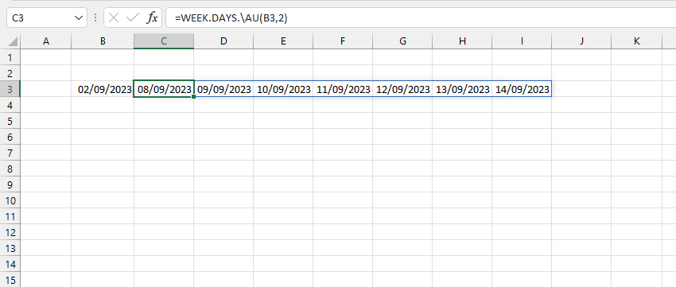
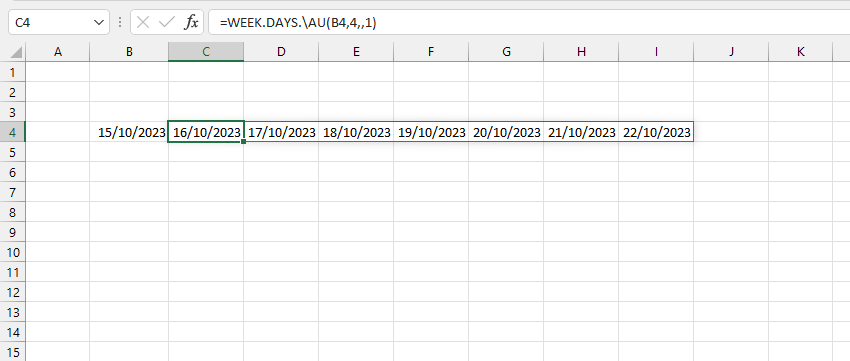
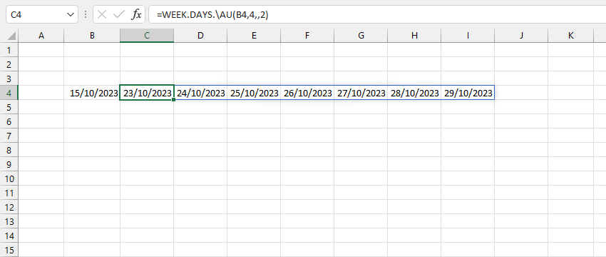

VD1: Xem ngày bắt đầu của tuần dựa trên ngày bắt đầu của mỗi tháng. Tuần đầu tiên của tháng 10 tính từ 1/10-8/10.
YC : Tìm danh sách các ngày thuộc Tuần 2.
VD2: Nếu xem mỗi tuần bắt đầu từ Thứ 2. Tuần đầu tiên của tháng 10 tính từ 25/9-1/10.
YC : Tìm danh sách các ngày thuộc tuần 4.
VD3: Nếu xem mỗi tuần bắt đầu từ Thứ 2 áp dụng trong phạm vi tháng. Tuần đầu tiên của tháng 10 tính từ 2/10-8/10.
YC : Tìm danh sách các ngày thuộc tuần 4.
Related function
WEEK.INDEX Trả về số thứ tự của tuần trong tháng hoặc năm từ ngày chỉ định.
TIME.NOW Trả về thời gian hiện tại ở định dạng chuỗi.
DATETIME.NOW Trả về ngày tháng và thời gian hiện tại ở định dạng chuỗi.
Return to Home